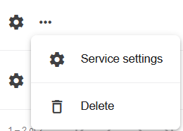
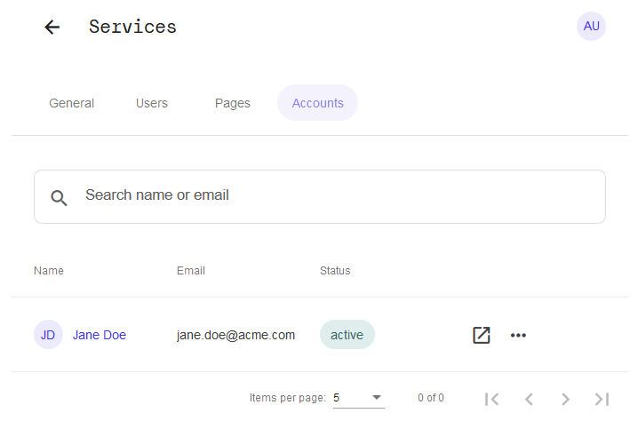

sorbay_ciam
Functionality
The sorbay_ciam provides user management with authentication and self-service capabilities for end users. The overall strategy is a "Bring your own UI" so you may use the provided API from sorbay_ciam to integrate the capabilities in your app.
Authentication
It provides the means to authenticate users, including two-factor authentication with the Google Authenticator app (iOS and Android).
Self-Service
The sorbay_ciam service includes self-service functionality, that allows your users to manage their account and profile themselves, such as changing the password, changing user attributes or enabling two-factor authentication.
Configuration
To configure an instance of the sorbay_ciam service, click the "Service settings" option in the popup menu of an entry in the services list:

You will then be presented with the settings of that instance of the sorbay_ciam service. Its functionality is grouped in 4 tabs:
- General - general settings for this sorbay_ciam service instance
- Users - user-related configuration settings
- Pages - custom UI URL configuration
- Accounts - management of service user accounts
General
Open service UI
At the top, you find the button "Open interfaces" which will open a new browser window with the URL of this instance of the sorbay_ciam service. What is displayed here exactly, varies if you configure custom UI URLs in the "Pages" section.
Service name
In the "Base" section, you can change the name of the service. Save your change by clicking the "Save" button in the lower right corner.
Delete service
Under "Service deletion", you can delete this service instance entirely. NOTE: This change cannot be undone! It will irrevocably delete the service and all related data and resources.
Delete the service by clicking the "Delete service" button, and then confirm the deletion in the following pop-up dialog.
Users
Under the "Users" tab, you find various sections where you can configure several aspects related to the authentication and data storage of service users.
Authentication
Set the required minimum length for the password by adjusting the slider to the desired value.
Enable the checkbox to enforce a check, that prevents from passwords that are equal to the username.
Two Factor
By enabling the "Enforce two factor authentication" checkbox in this section, users will be forced to enable two-factor authentication.
Schema
Here you will be able to adapt the data schema for storing user accounts.
This functionality is not yet available during the beta testing phase!
Pages
Following the "Bring your own UI" philosophy, the sorbay_ciam service allows you to configure custom frontend URLs here. This could be custom-written JavaScript frontends, that integrate with the service API. Follow the instructions how to configure and launch our demo UI application.
- "Login URL" - Login application URL
- "Registration URL" - Registration application URL
- "Verification URL" - Verification application URL
- "Recovery URL" - Recovery application URL
- "Settings URL" - Settings application URL
- "Error URL" - Error application URL
Redirects
- "Default URL" -
- "Login URL" - Login redirect URL
- "Registration URL" - Registration redirect URL
- "Settings URL" - Settings redirect URL
- "Verification URL" - Verification redirect URL
- "Logout URL" - Logout redirect URL
CORS
Add any custom allowed origin URLs in this section by clicking the "+ Allowed Origin URL" button. Click the "Save" button in the lower right corner to save the new URL.
Custom
Finally, you may set a custom domain name, and define a custom domain for the session cookie, depending on your application's requirements.
You will have to create a CNAME record with the DNS provider with which the domain is registered, with the value that's provided in this view.
It is important that you add CORS origins to your custom domain to ensure Single Page Applications (SPAs) support.
Accounts
Under this tab, you can manage user accounts for users of the service.
Create user
To create a new service user, click the "+ Create user" button:
This will open the following pop-up dialog where you can enter the details of the new user account:

Chose the status for the new user account ("active" or "inactive") and then create the new account by clicking the "Create user" button.
User list
Once you have created one or more service users, they will be listed under the "Accounts" tab:

Edit user
To edit a user account, click the  symbol, or the "Open user" option in the pop-up menu:
symbol, or the "Open user" option in the pop-up menu:

Delete user
To delete a user account, click the "Delete user" option in the pop-up menu: